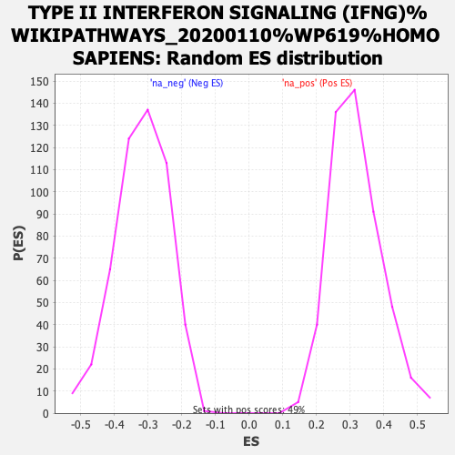

| | | Dataset | rankings |
| Phenotype | NoPhenotypeAvailable |
| Upregulated in class | na_neg |
| GeneSet | TYPE II INTERFERON SIGNALING (IFNG)%WIKIPATHWAYS_20200110%WP619%HOMO SAPIENS |
| Enrichment Score (ES) | -0.7026818 |
| Normalized Enrichment Score (NES) | -2.2005217 |
| Nominal p-value | 0.0 |
| FDR q-value | 4.0660045E-4 |
| FWER p-Value | 0.005 |
Table: GSEA Results Summary
_WIKIPATHWAYS_20200110_WP619_HOMO_SAPIENS_57.png) Fig 1: Enrichment plot: TYPE II INTERFERON SIGNALING (IFNG)%WIKIPATHWAYS_20200110%WP619%HOMO SAPIENS
Fig 1: Enrichment plot: TYPE II INTERFERON SIGNALING (IFNG)%WIKIPATHWAYS_20200110%WP619%HOMO SAPIENS
Profile of the Running ES Score & Positions of GeneSet Members on the Rank Ordered List
| PROBE | GENE SYMBOL | GENE_TITLE | RANK IN GENE LIST | RANK METRIC SCORE | RUNNING ES | CORE ENRICHMENT | | 1 | IFNGR2 | | | 4596 | 0.468 | -0.2749 | No |
| 2 | IRF2 | | | 5011 | 0.390 | -0.2911 | No |
| 3 | PTPN11 | | | 5501 | 0.303 | -0.3141 | No |
| 4 | EIF2AK2 | | | 6125 | 0.201 | -0.3480 | No |
| 5 | IFI6 | | | 6668 | 0.123 | -0.3787 | No |
| 6 | NOS2 | | | 8068 | -0.031 | -0.4652 | No |
| 7 | JAK1 | | | 8442 | -0.077 | -0.4865 | No |
| 8 | CYBB | | | 8827 | -0.129 | -0.5073 | No |
| 9 | OAS1 | | | 9044 | -0.156 | -0.5169 | No |
| 10 | ISG15 | | | 9564 | -0.232 | -0.5435 | No |
| 11 | IFNGR1 | | | 10692 | -0.421 | -0.6034 | No |
| 12 | IRF8 | | | 10859 | -0.452 | -0.6025 | No |
| 13 | JAK2 | | | 11429 | -0.570 | -0.6239 | No |
| 14 | HLA-B | | | 11447 | -0.574 | -0.6108 | No |
| 15 | PSMB9 | | | 12464 | -0.828 | -0.6537 | No |
| 16 | IRF9 | | | 13171 | -1.043 | -0.6719 | Yes |
| 17 | IFIT2 | | | 13309 | -1.091 | -0.6535 | Yes |
| 18 | IRF4 | | | 13524 | -1.157 | -0.6383 | Yes |
| 19 | STAT1 | | | 14558 | -1.642 | -0.6621 | Yes |
| 20 | ICAM1 | | | 15187 | -2.050 | -0.6506 | Yes |
| 21 | SPI1 | | | 15228 | -2.096 | -0.6013 | Yes |
| 22 | TAP1 | | | 15284 | -2.143 | -0.5518 | Yes |
| 23 | CXCL9 | | | 15433 | -2.286 | -0.5045 | Yes |
| 24 | CXCL10 | | | 15526 | -2.415 | -0.4506 | Yes |
| 25 | STAT2 | | | 15530 | -2.422 | -0.3910 | Yes |
| 26 | CIITA | | | 15652 | -2.586 | -0.3346 | Yes |
| 27 | PRKCD | | | 15727 | -2.694 | -0.2727 | Yes |
| 28 | IL1B | | | 15778 | -2.784 | -0.2070 | Yes |
| 29 | IRF1 | | | 15787 | -2.800 | -0.1383 | Yes |
| 30 | SOCS3 | | | 15882 | -2.960 | -0.0710 | Yes |
| 31 | GBP1 | | | 15984 | -3.352 | 0.0055 | Yes |
Table: GSEA details [plain text format]

Fig 2: TYPE II INTERFERON SIGNALING (IFNG)%WIKIPATHWAYS_20200110%WP619%HOMO SAPIENS: Random ES distribution
Gene set null distribution of ES for TYPE II INTERFERON SIGNALING (IFNG)%WIKIPATHWAYS_20200110%WP619%HOMO SAPIENS